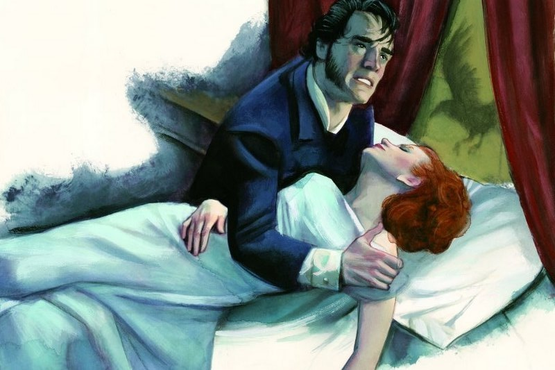

Cumbres borrascosas

Dicen que del amor al odio hay un paso, y en Cumbres Borrascosas se nota clarito. Los protagonistas, Catherine y Heathcliff, son súper intensos y tienen una forma cruel y apasionada de mostrar sus sentimientos. La historia se la cuenta la señora Dean al nuevo inquilino de la casa, el señor Lockwood. Catherine y Heathcliff empiezan con un amor súper fuerte, pero todo se complica cuando Catherine decide no casarse con él porque piensa que es de una clase social más baja y que es muy rudo. Entonces Heathcliff se casa con otra mujer para vengarse, y a partir de ahí todo lo que hacen los personajes gira mucho en torno a lastimarse unos a otros.
Algo que hace que este libro sea diferente es cómo está contado. Cuando salió en 1847, a muchos lectores les parecía raro. La historia tiene varias capas, como muñecas rusas: dentro de una historia hay otra, y eso hace que algo que parece simple se vuelva mucho más complejo. Por un lado está lo que vive el señor Lockwood cuando llega a la casa y conoce a la gente, como Heathcliff o la señora Dean. Por otro lado está la historia de los Linton y los Earnshaw, donde se desarrolla el romance de Catherine y Heathcliff y todos los dramas familiares, como la adopción de Heathcliff y los enredos de venganza y matrimonios entre las familias.
“Si amara con todas las fuerzas de su insignificante ser, no podría amar tanto en ochenta años como yo en un día.”
El lugar también es súper importante. La casa está en Yorkshire, un lugar apartado y siempre con viento y tormentas. Incluso las personas que viven ahí, sobre todo Heathcliff, parecen reflejar el clima: se enojan rápido y son imprevisibles. Emily Brontë logra que los personajes se sientan reales sin tener que describirlos demasiado; basta con ver lo que hacen y cómo hablan.
Cumbres Borrascosas* es uno de esos libros que no se olvidan: es intenso, crudo y muestra una sociedad donde la venganza y las pasiones mueven todo. Es la única novela que escribió Emily Brontë y, sin duda, vale la pena leerla.
Y tú, ¿qué opinas de esta gran obra? ¡Déjame tu comentario!
Camila:
¡Me encanta este libro! Yo lo leí en el colegio y nunca me atrapó tanto hasta que entendí lo de las capas de la historia. Muy buena tu reseña.
Carla:
Qué buena manera de explicarlo sin spoilers pesados. Gracias por la recomendación.